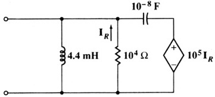

B03 AC analysis: Resonance frequency and its input impedance
Question. Given the following circuit, find the value of resonance frequency in rad/s and the value in ohms of the impedance of the circuit at resonance.

Solution:
There are different ways to solve this problem using Symbulator. I'll present here the easiest way, using one of the latest tools of Symbulator: thevenin(). This tool will provide us with the Zth, which is the input impedance of the circuit.
Please, set Mode Display Digits in Float 9 or 10.
A little theory. Resonance in a circuit is when the imaginary part of its entry admitance equals zero. Input admitance can be found as the inverse of input impedance.
1) Label nodes and elements. Define a variable containing circuit description. I used this description:
"r1,0,1,1E4
; l1,0,1,4.4E-3; cx,1,2,1E-8; e2,2,0,1E5*ir1" àcir2) Run the Thevenin/Norton tool:
sq\thevenin(cir,1,0)
Done
When asked, select AC (alternating current) analysis, and input wo as frequency. This symbolic frequency will help us find the resonance frequency in the next step.
3) Now, find the frequency that produces resonance, this is to say, the frequency that makes the imaginary part of admitance (or the impedance) equal zero:
solve(imag(1/zth)=0,wo)|wo>0
wo=45454.5454
Now, find the value of entry impedance at given frequency.
zth|ans(1)9999.93032
Answer: The answers obtained are the right ones.